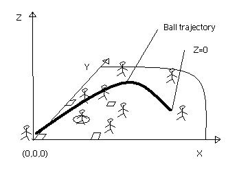

Problem E
Playball !!!
Input: standard input
Output: standard
output
Time Limit: 1 second
Memory Limit: 32 MB
While on a trip to the
According to the players' position on the field, they may catch the balls that are hit by the batters, if they can get there on time before the ball touches the ground. The ball's position follows the following simple mathematical equations:
|  |
For the ball: z = at2+bt + c - a,b,..,g are
constants given for each ball hit. |
Each player has an individual starting position (xo, yo) he always returns to before a new ball is hit. The players, each starting to run as soon as the ball is hit towards the correct position where the ball will eventually touch the ground, all theoretically have a chance to catch the ball. So you must verify all of them since the distance they can run is dependant on their individual speed. Well, after all, we assume that these players always run as fast as possible given the good paychecks they are given, so the variation of their position is always the same throughout the match, e.g. they run at the same speed.
Important notes:
Input
The format of the input is the following (where all parameters are integer values):
PLAYERS=#
// number of players/lines to read
x y
v
// x,y - startup position of the player; v - the speed of the player
...
// for each player
BALLS=#
// Number of balls that are hit
a b c d e f
g
// Parameters according to the ball equations
...
// for each ball
The output should consist of one line per ball following the format:
"Ball i was ??? at (xkor,ykor)", where i is the ball number, ??? is one of caught, safe, or foul, and (xkor,ykor) is the coordinates where the ball hit the ground. Look at the example below!
Sample Input
PLAYERS=90 0 316 16 230 0 436 24 40 30 324 36 524 75 775 24 660 60 7BALLS=12-1 3 1 21 3 14 5-1 1 1 11 3 2 5-3 4 0 8 5 11 2-1 2 1 -4 1 6 7-1 1 0 9 3 14 5-2 4 1 32 3 12 5-1 1 1 11 1 19 5-4 5 0 18 5 20 5-1 2 1 24 5 6 7-1 1 0 9 3 4 1-2 2 1 2 5 22 5-1 6 1 10 5 13 5
Sample Output
Ball 1 was caught at (87,61)Ball 2 was safe at (25,9)Ball 3 was safe at (21,24)Ball 4 was foul at (-11,25)Ball 5 was safe at (12,19)Ball 6 was safe at (99,41)Ball 7 was caught at (23,43)Ball 8 was safe at (41,45)Ball 9 was caught at (77,25)Ball 10 was safe at (12,5)Ball 11 was safe at (9,49)Ball 12 was caught at (75,96)
Ghyslain Pelletier